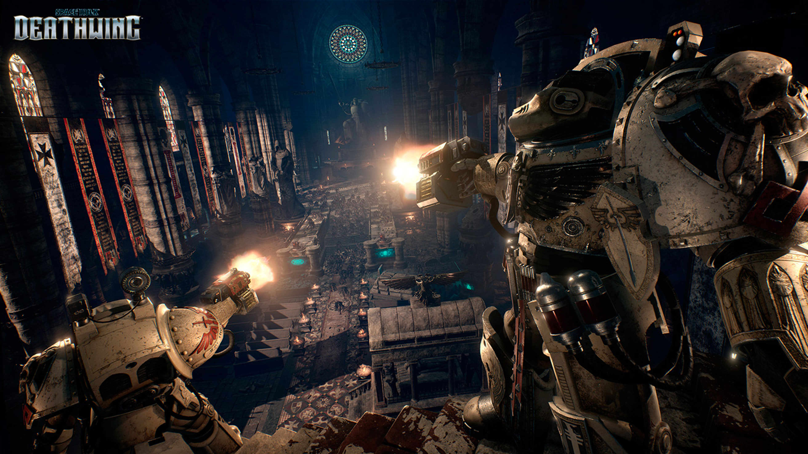

Spacehulk: Deathwing Review
Watch some gameplay here!
To its credit, Deathwing offered me several brief moments of outright, fanboyish glee. Clunking around in Terminator armor while cleansing a hallway of dozens and dozens of enemies, using an autocannon of a caliber that is normally reserved for vehicles, and literally wading through the corpses of the dead toward an objective marker in the near distance that read simply: “Purge”, I was ecstatic. It’s what playing as a Space Marine should feel like. It had me convinced that a first-person shooter was the ideal way to present this particular fantasy.
And the horde-blasting, Emperor-praising action is at its best when you jump into four-player co-op. The different playable classes (strangely missing from single-player) allow for some more variety and specialized tactics, and focusing on team coordination can distract from some of the more threadbare elements of the Space Hulk’s cast and environments. There’s an option to play with all of the available kit items and abilities for your class unlocked immediately, or you can choose to start with basic gear and earn the rest with XP over the course of a session. There are no persistent unlocks that stick with you from one session to the next, though, which was a little disappointing.

It’s a lot harder to recommend playing in single-player mode because controls for giving orders to your battle-brothers are awkward and cumbersome (Mass Effect 2 did far better in 2010) and the oblivious AI seems unaware of anything approaching them from anywhere besides head-on. In many tense battles, I found myself overwhelmed from both sides as I was trying to clear a path ahead, and my squadmates couldn’t cover our collective rear between the two them - despite having access to the same types of weaponry I had. Sometimes I wished I could tell my companions to take the day off and let me go solo through all 9 missions, considering how much of the work I was having to do myself anyway.
What even multiplayer buddies can’t save you from is the fact that the whole thing is painfully lacking polish from floor to ceiling. The oppressive, gothic environments are moody and atmospheric, but not particularly impressive to look at. The textures, and especially the lighting and post-processing effects, look about half a decade out of date even on max settings. The interface is disorganized, clunky, and unattractive. Particularly annoying is the fact that save games aren’t sorted by timestamp, so I often had to scan them each by eye to figure out which was the most recent. And perhaps least forgivable, the framerate chugs like a half-destroyed Predator tank when there are tons of enemies onscreen - which is often - even with a Core i7 and a GTX 1070 that exceed the recommended specs.

Deathwing also does a poor job of getting you invested in its story, even for an over-the-top action game set in the ridiculousness of the Warhammer 40K universe. The voice acting is appropriately scenery-chewing and earnest for the source material, but none of the characters have much of a personality beyond Generic Space Warrior. Your squadmates barely start to develop identities beyond spitting repetitive, canned battle cries. (The Dawn of War series showed us this doesn’t have to be the case with Space Marines.) Additionally, all of the stakes involved in the story are presented in a tell, not show, fashion that makes it hard to really care about what’s going on beyond shooting Tyranids, and even sometimes left me confused what my actual objective was.
Space Hulk: Deathwing is that paradoxical game that’s hard to dislike, but also hard to love. The glorious moments of fervent xeno-purging are too fleeting, and often left me standing in dark corridors, surrounded by my slain foes, looking for any kind of context or sense of lasting accomplishment. There is somewhere in it the embryo of the ultimate Space Marine game, but despite a lot of potential for simple, squad-based fun in multiplayer, it never moves beyond being a stripped-down and poorly running prototype for the kind of game I wish it had been.